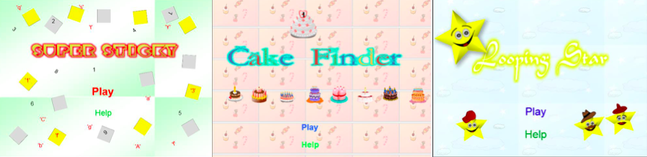

Games as Analogs for Teaching Basic Programming Concepts
An Investigation of the Use of Casual Games as Analogs for Teaching Basic Programming Concepts
Researcher: Shafeeza Hussain
Supervisors: Penelope Defreitas, Max Baird & Lenandlar Singh
Institution: University of Guyana
Research Period: to

Abstract
Research has shown that students, especially novices, face difficulties while learning programming. Analogies are used by teachers to help students understand abstract programming concepts. However, if analogies are not well chosen they can cause misconception(s). According to Reese (n.d.) game-based technologies, which are goal oriented, provide the means to design the pragmatic constraints necessary to guide learners toward viable inferences. The games implemented in this research aim to aid novices with reading and understanding existing pieces of code as well as identifying errors in existing pieces of code. In Guyana and the Caribbean students are still required to attend lecture sessions. Therefore, the experiment carried out assessed whether introductory programming lessons complemented with games as analogs would be more effective than the traditional lecture method. The lessons were delivered to the students from the control group using the traditional lecture method whereas the lessons delivered to the students from the experimental group were complemented with games as analogs. The students who played the games performed significantly better in the assessment than the students who did not play the games. Therefore, the results are encouraging.
Visualization in Programming
According to Ala-Mutka (n.d.) the learning of the basic concepts is often emphasized; these form the basis for building more advanced skills. The basic programming concepts would be the concepts serving as a starting point or basis for learning programming. An attempt to aid learning and teaching was the development of visualization materials about programming concepts (Lahtinen, n.d.). Ala-Mutka (n.d.) further stated that “According to the surveys, all respondents were confident that visualizations help students' understanding and learning of concepts.” However, statements against visualization were the amount of time that is required to create visualizations, problems teachers faced in providing the visualizations for the students in a usable way and the problems students faced in using them effectively in learning (Ala-Mutka, n.d.; Lahtinen, n.d.).
Analogy and Programming
Analogy is the comparison showing similarity between like features of two things. There are in-depth studies that indicate that using analogies assists in concept development. According to Thagard (1992) analogies are well known for helping students understand complex science concepts but they are also well known for causing misconceptions in cases where students over generalize and map not corresponding features of source and target concepts. A problem identified by Gomes and Mendes (2007) is that the teaching of dynamic concepts is usually made through static materials. According to Doukakis, Tsaganou, and Grigoriadou (2007) analogies that are appropriate for teaching programming concepts and structures are function or structural- functional analogies. Structural analogs focus on the structure of a concept and functional analogs focuses on the functions. The experiment conducted by Doukakis et al revealed that engaging novice programmers in exploratory activities with the use of a properly selected interactive animated analogy can help them deal with some of their misconceptions in the concept of programming variable. Their experiment also indicated that when students were familiar with the analog chosen they were interested in experimenting with it. Furthermore, they stated that another problem concerns students’ familiarity with the analog proposed by the teacher, the textbook writer or the educational software designer. They stated that “Unfortunately, there is not always available an analog familiar to all students, that is also appropriate for the instruction of a specific concept.” However, they noted that computer based simulations and animation give new and perhaps more efficient way to incorporate analogies in instruction.
The Lecture Method
In Guyana and the Caribbean students are still required to attend lecture sessions. According to Grimley, Green, Nilsen and Thompson (2012) lecture based instruction has been the major form of instruction in tertiary institutions for many years and will probably endure for many years to come. Grimley et al further stated that “The main benefit of lecture based instruction is that it is efficient and economic, especially in these times of economic hardship.” At the University of Guyana, for the course titled “Introduction to Programming Using C”, students are required to attend three hours lecture sessions and two hour labs. Bernard and Cummings (2003) described an integrated instructional model for integrating web based instructions and classroom teaching in educational institutions in the Caribbean. At the tertiary level students were required to study the current topic using the web based course, prior to coming to class. It was observed that due to this approach the lectures were very interactive; they became discussion of course materials where students were able to make real contributions to the discussion. Bernard and Cummings (2003) stated that “The studies show that the integrated approach facilitated more effective learning.” Therefore, a major aim of this experiment is to find out if the delivery of introductory programming lessons complemented with games as analogs would be more effective than the traditional lecture method.
Hypothesis
We propose that the delivery of introductory programming lessons complemented with games as analogs will be more effective than the lecture method.
Implementation
The three games that were implemented are Super Sticky, Cake Finder and Looping Star. These games did not specifically focus on any programming language syntax. The aim was more on helping the player remember certain basic steps or rules and tracing the values of variables as they change. When designing the games the PETTT Technical Report titled “Computer Science Education Research on Programming: What We Know and How We Know It” was used as guidance. This report was a review on literature that identified certain misconceptions students make as they program.
Super Sticky
The Super Sticky game seeks to introduce the player to variables.
Cake Finder
The Cake Finder game teaches about the selection structure: if... else. Based on the description of the cake given by the chef and the cupboard’s labels the player has to determine which cupboard the cake is in. It should be noted that this game is fairly simple to play. This may be because the question was kept simple.
Looping Star
Besides teaching about the while loop the Looping Star casual game gives the player practice on four ways variables could be assigned.